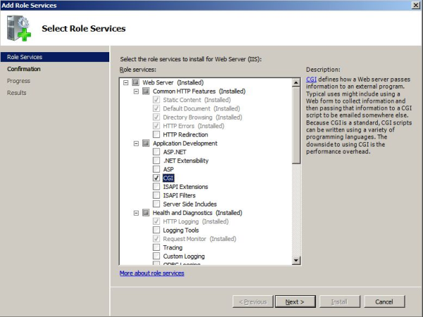
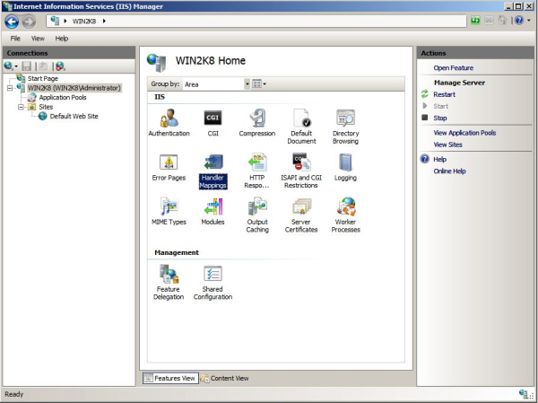
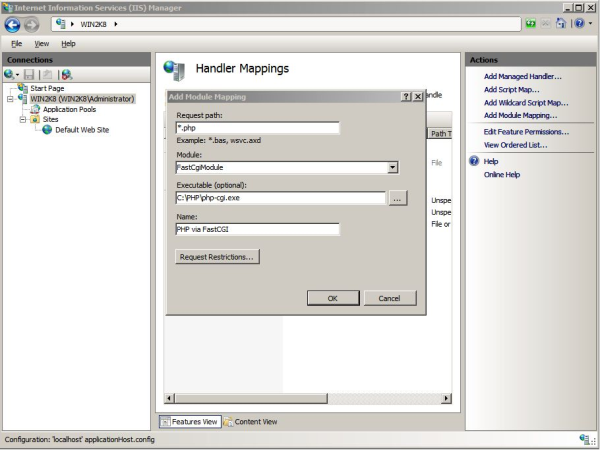

Installing PHP 5.x with FastCGI on Windows Server 2008 with IIS7
Translations:
To enable FastCGI on IIS 7.0 add CGI role service by going to Server Manager -> Roles -> Add Role Services. This enables both CGI and FastCGI services.

-
Download the latest non-thread safe binaries of PHP from http://www.php.net/downloads.php.
-
Unpack the files to a directory of your choice (e.g. C:\PHP). Rename the php.ini-recommended to php-cgi-fcgi.ini.
-
Open php-cgi-fcgi.ini file and uncomment and modify settings as follows:
a. Set fastcgi.impersonate = 1;
b. Set cgi.fix_pathinfo=1. cgi.fix_pathinfo;
c. Set cgi.force_redirect = 0;
d. short_open_tag = On;
e. extension_dir = "c:\php5\ext\";
f. uncomment extension=php_mysql.dll;
Open IIS Manager and then select and open “Handler Mappings” at the server level.


- Request path: *.php
-
Module: FastCgiModule
-
Executable: C:\[Path to your PHP installation]\php-cgi.exe
-
Name: PHP via FastCGI
Click OK. The dialog box appears asking if you want to create a FastCGI application for this executable. Click Yes.
Add WSP_IUSRS permissions with "Read & execute" on your PHP folder.
PHP Security Recommendations
The following recommendations describe how to tighten security of PHP in shared hosting environment. To make the recommended changes locate and open php-cgi-fcgi.ini file and edit it as described below:
- Disable remote URL's for file handling functions:
- Set allow_url_fopen=Off
- Set allow_url_include=Off
- Disable register_globals:
- register_globals=Off
- Restrict where PHP can read and write on a file system, e.g.:
- open_basedir="c:\hostingspaces\" or your path to your hosting spaces folder
- Disable safe mode:
- safe_mode=Off
- safe_mode_gid=Off
- Limit script execution time:
- max_execution_time=30
- max_input_time=60
- Limit memory usage and file sizes:
- memory_limit=16M
- upload_max_filesize=2M
- post_max_size=8M
- max_input_nesting_levels=64
For more information about PHP and IIS7 please follow http://learn.iis.net/page.aspx/208/fastcgi-with-php/